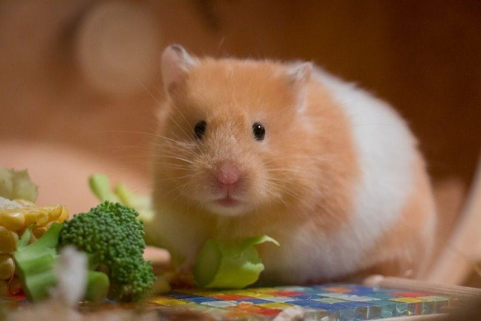
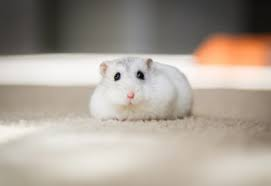
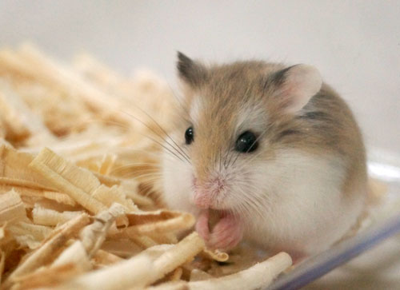

햄스터 종류



골든햄스터
Syrian hamsters are the most popular pet hamster. They are known for their docile nature and come in a variety of colors.
드워프햄스터
설명Dwarf hamsters are smaller and more social than Syrian hamsters. They are very active and can live in pairs or groups.
로보로프스키햄스터
Roborovski hamsters are the smallest and fastest hamsters. They are very entertaining to watch but can be more challenging to handle.